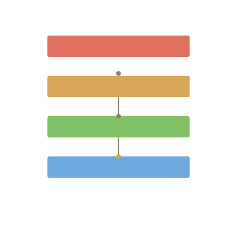

Your model in YAML. Validated in one line.
// A headless Rust engine for ArchiMate 3.2 — validate, generate, parse, and diff architecture models. Built for AI agent integration.
validate
model: name: CRM Architecture viewpoint: Application elements: - id: app_001 name: CRM kind: ApplicationComponent - id: svc_001 name: Customer API kind: ApplicationService relationships: - id: rel_001 source: app_001 target: svc_001 kind: Composition
// exit 0 = valid, 1 = rule violation, 2 = malformed input.
the_workflow
archr validate --input model.yaml.archimate Open Exchange XML for Archi.archr generate --input model.yaml --output model.archimate.archimate files back into YAML.archr parse --input model.archimate --output model.yamlarchr diff --old existing.archimate --new updated.yamlinstall
curl -fsSL https://raw.githubusercontent.com/haquiticos/archr/main/install/install.sh | bashpowershell -c "irm https://raw.githubusercontent.com/haquiticos/archr/main/install/install.ps1 | iex"git clone https://github.com/haquiticos/archr && cd archr && cargo build --releasearchr --version # archr 1.0.0layers
Goal, Requirement, Driver, Stakeholder
Resource, Capability, ValueStream
BusinessActor, BusinessProcess, BusinessService
ApplicationComponent, ApplicationService, DataObject
Node, Device, Artifact, CommunicationNetwork
Equipment, Facility, Material
WorkPackage, Deliverable, Plateau
Grouping, Location, Junctions
// validation is data-driven — no hardcoded match. rules live in a const ALLOWED table.
agent_skill
cd archr && bash skill/install.shbash skill/install.sh --userregister skill/ as an agent skilladd skill/SKILL.md to your skills// triggers automatically on "archimate", "archi", "model validation", "architecture diagram".
// wrapper is PEP 723, stdlib only, ARCHR_BIN for custom binary path.